Yamazoe, Nara: things to do, food and stays
Yamazoe · Nara
Yamazoe
Highlighted on the Nara map.

Stay
ume,yamazoe / 1日3組の里山ホテル

ume, yamazoe / 1 Nichi 3 Kuno Satoyama Hotel
Hotel in Katahira, Yamazoe with a sauna and a quiet countryside setting.
private villa 里音
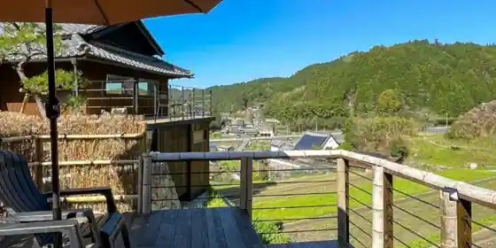
private villa Sato Oto
Inn in Minetera, Yamazoe with one group per day and a sauna.
Dining
オークモントゴルフクラブ

Okumontogorufukurabu
ume yamazoe
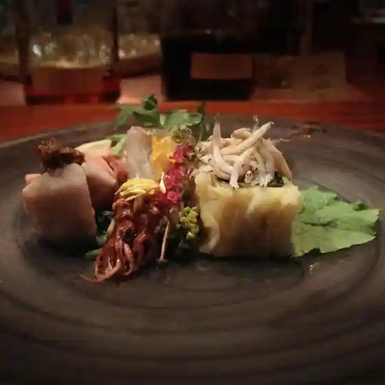
ume yamazoe
古民家カフェ Roots
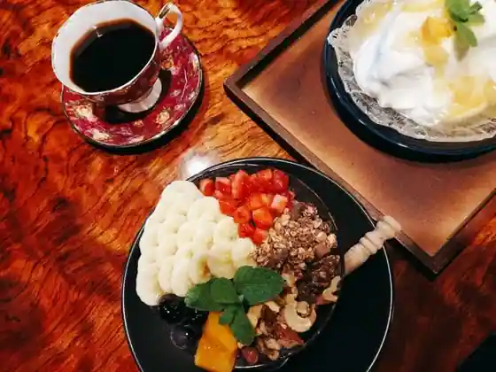
Ko Minka Cafe Roots
ドライブイン山添
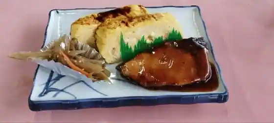
Doraibuin Yamazoe
布目の里 山添店
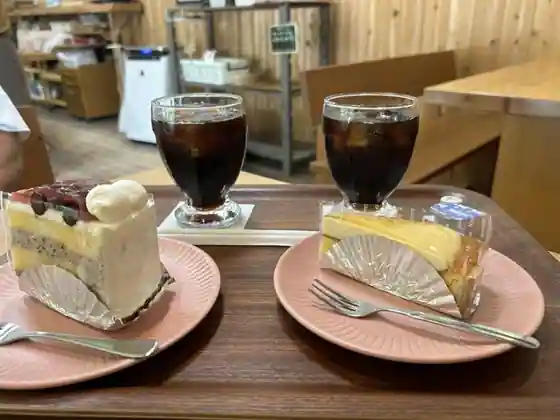
Nunome No Sato Yamazoe
ルアーナ フロム 一服屋
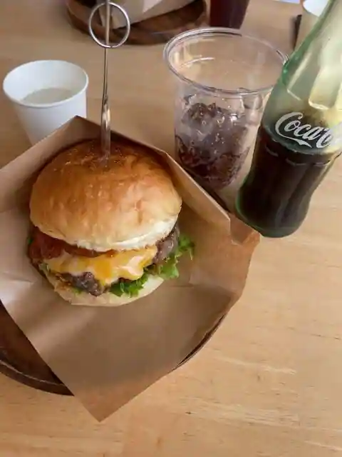
Ruana Furomu Ippuku Ya
once
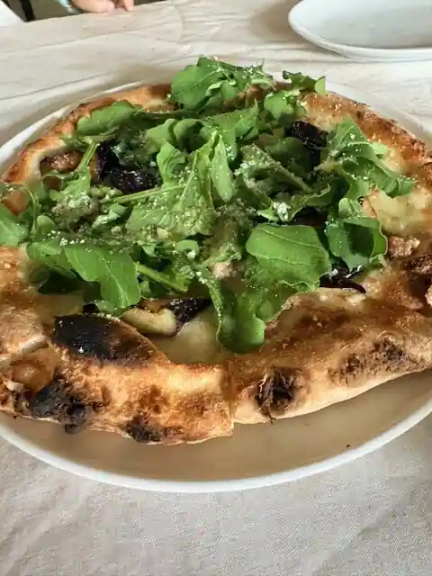
once
奈良白鳳カンツリークラブ
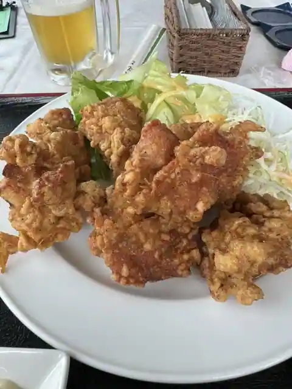
Nara Hakuho Kantsurikurabu
カフェ サン ウッド
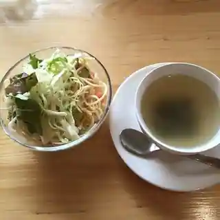
Cafe San Uddo
ドアーズヤマゾエ
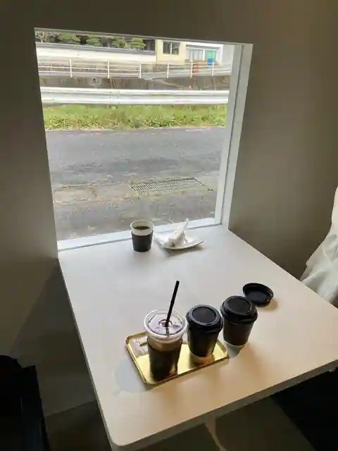
Doazuyamazoe
HB Cafe
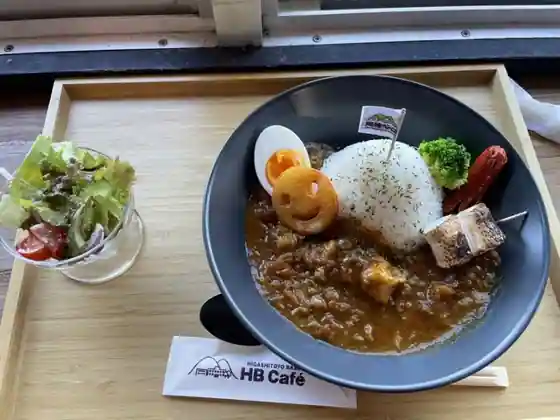
HB Cafe
上島製菓
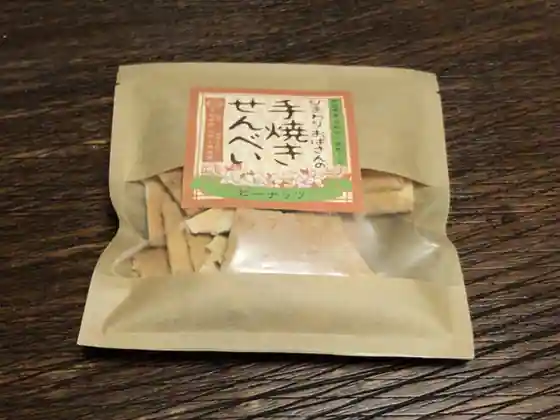
Kamishima Seika
Sights
Meme Ranch
Prefectural Gatsugase Kanno Yama Nature Park

Nabekura Kei